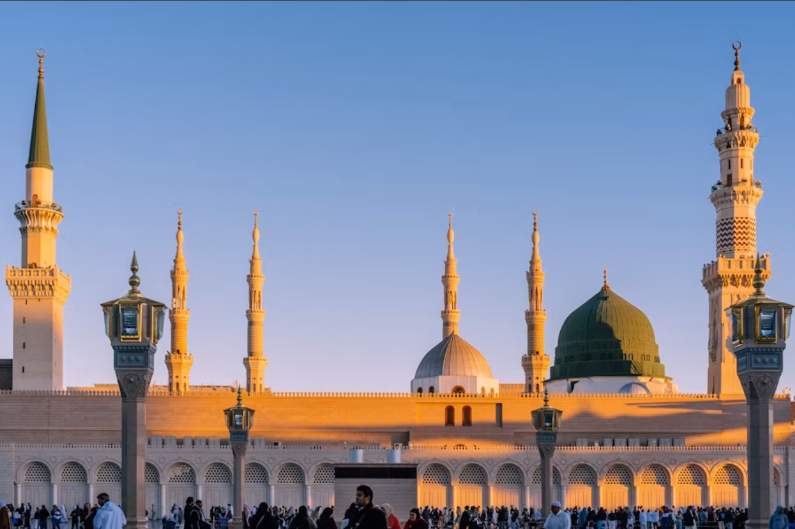

Welcome
Every person who enters is met with dignity, patience and a sense of belonging.
A humble local musallah built around worship, learning and the bonds of same interests
Macquarie Fields Musallah serves local Muslims with a clean, caring space for daily salah, Jummah prayer and Quran education. We welcome individuals and families from every background.
Our volunteers work to make each visit easy: clear timetables, respectful class arrangements and being welcoming.

Every person who enters is met with dignity, patience and a sense of belonging.
we protect the peaceful atmosphere needed for focuses, congregational prayer.
We support lifelong Quran learning through caring teachers and thoughtful programs.